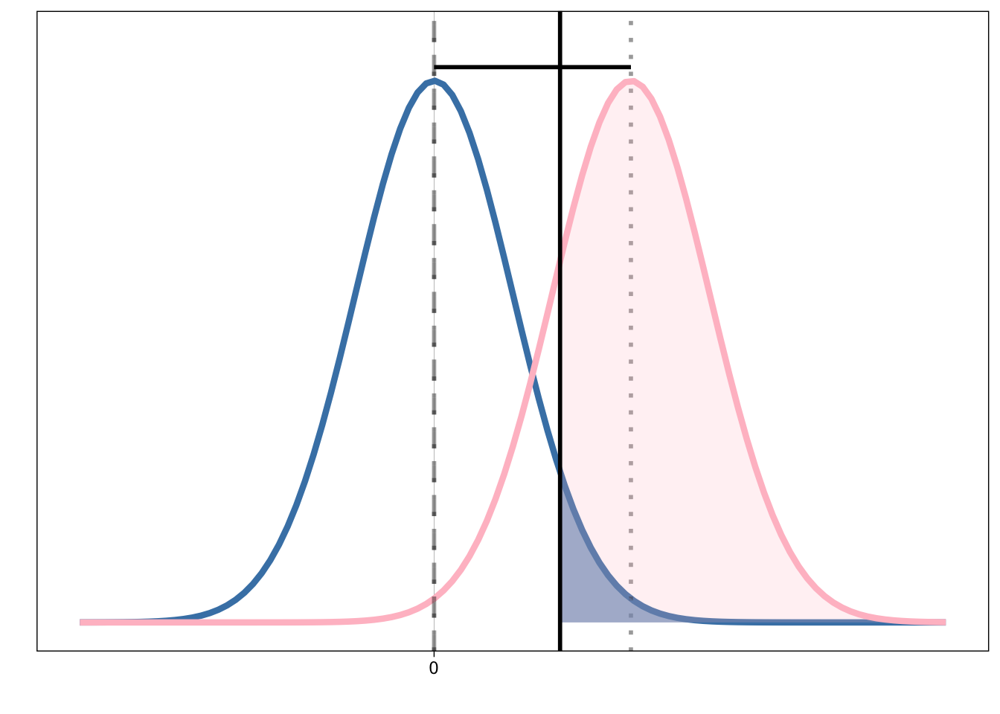
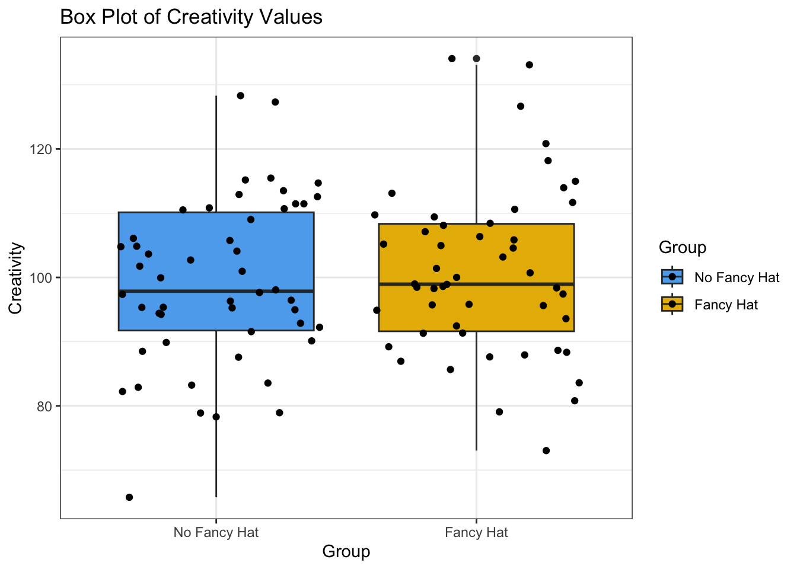
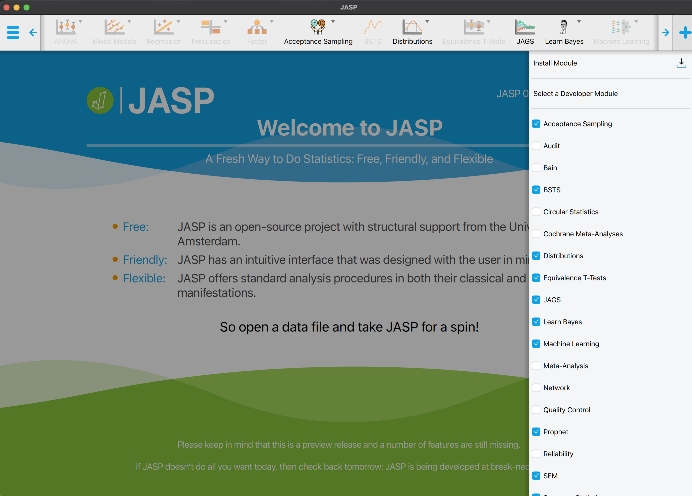
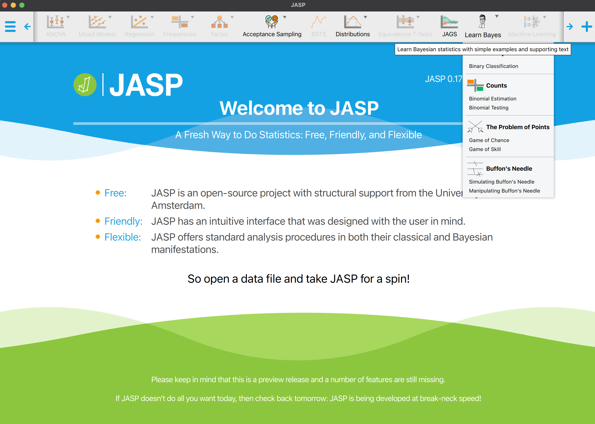
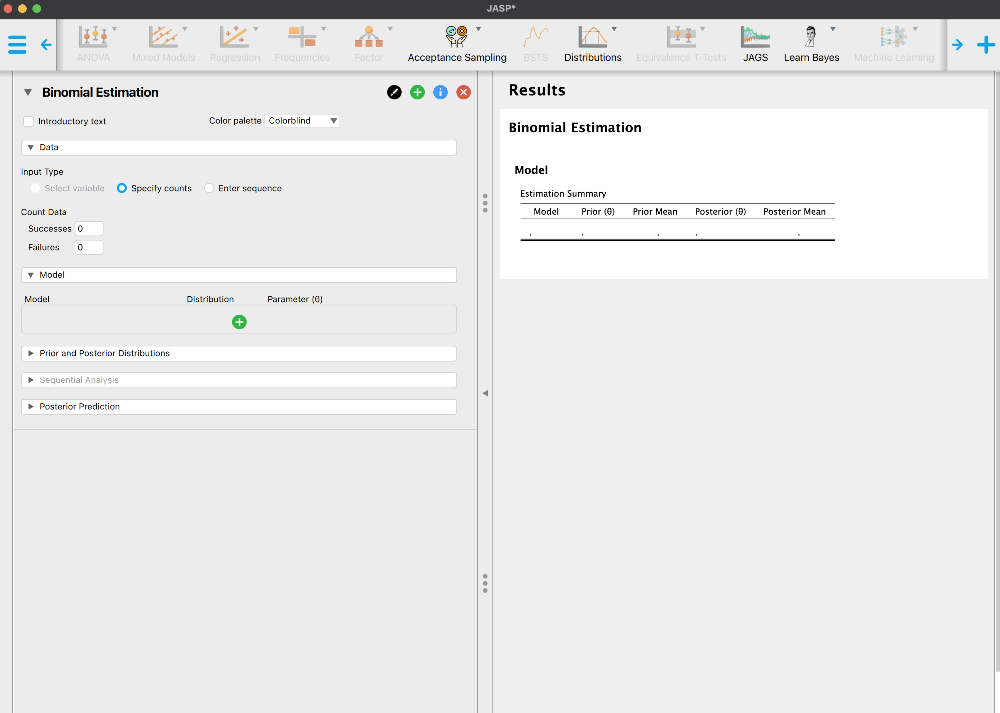

Reaktivierung: Statistikwissen
Arbeiten in Kleingruppen.
![]()
In der heutigen Sitzung:
- Brainstorming: NHST, Power
- Welche Fagen kann NHST beantworten?
- Bilden Sie 2er oder 3er-Gruppen.
- Bearbeiten Sie die folgenden Fragen gemeinsam.
- Halten Sie Ihre Antworten in einem gemeinsamen Dokument fest.
- Bereiten Sie sich darauf vor, Ihre Antworten im Plenum zu teilen.
Aufgabe 1
Überlegen Sie sich anhand folgenden Bildes, wie Konzepte aus der Signal Detection Theory mit statistischen Hypothesentests (NHST) zusammenhängen.
- Was sind Typ I und Typ II Fehler?
- Was könnte hier die Null- und Alternativhypothese sein?
- Gibt es Ähnlichkeiten/Unterschiede zwischen der Signal Detection Theory und NHST?
Aufgabe 2
Folgende Grafik versucht, einen t-Test für unabhängige Stichproben zu illustrieren. Versuchen Sie, die fehlenden Beschriftungen einzufügen.

- Was ist eine Nullhypothese?
- Was ist die Bedeutung der eingefärbten Flächen?
- Was ist die Distanz zwischen den beiden Mittelwerten?
- Was ist statistische Power?
- Welche Rolle spielt die Stichprobengröße \(n\)?
- Können Sie beschreiben, was ein p-Wert ist?
- Welche Fragen können Sie mit einem NUllhypothesen-Test beantworten?
Vielleicht hilft Ihnen folgende interaktive Grafik: Understanding Statistical Power and Significance Testing
Aufgabe 3
Importieren Sie das CSV File FancyHat.csv in Jasp und führen Sie einen t-Test für unabhängige Stichproben durch.
In dieser (fiktiven) Studie wurden Versuchspersonen in zwei Gruppen eingeteilt; eine Gruppe durfte während einer Kreativitäts-Aufgabe einen fancy hat tragen, die andere Gruppe musste sich mit einer konventionellen Kopfbedeckung begnügen. Die abhängige Variable ist die Kreativität (diese Skala ist analog zur IQ-Skala normiert, d.h. der Mittelwert ist 100 und die Standardabweichung 15).
- Welche Fragen können Sie mit einem Nullhypothesen-Test beantworten?
- Was sind die Ergebnisse des t-Tests?
- Welche Fragen würden Sie gerne beantworten können?
- Können Sie diese mit einem Signifikanztest beantworten?
Die Daten wurden von generiert, basieren aber auf einer echten Studie. Beide Gruppen wurden als normalverteilte Zufallszahlen simuliert, mit einer gemeinsamen Standardabweichung von 15. Die Gruppe mit den fancy hats hat einen Mittelwert von 103, die Gruppe ohne fancy hats einen Mittelwert von 98. Die Stichprobe umfasst 50 Personen pro Gruppe. Die wurden also so simuliert, dass es einen Unterschied zwischen den Gruppen gibt, der aber klein ist.
Hier ist der R Code, um die Daten zu generieren:
set.seed(12)Wenn Sie in R damit einen t-Test machen wollen:
FancyHat |>
ggplot(aes(y = Creativity, x = Group, fill = Group)) +
geom_boxplot(aes(y = Creativity, x = Group)) +
geom_jitter() +
scale_fill_manual(values = c("steelblue2", "#E7B800")) +
labs(title= "Box Plot of Creativity Values") +
theme_bw()
Two-tailed t-test:
fancyhat_ttest <- t.test(Creativity ~ Group,
var.equal = TRUE,
data = FancyHat)fancyhat_ttest
Two Sample t-test
data: Creativity by Group
t = -0.63685, df = 98, p-value = 0.5257
alternative hypothesis: true difference in means between group No Fancy Hat and group Fancy Hat is not equal to 0
95 percent confidence interval:
-6.779899 3.485558
sample estimates:
mean in group No Fancy Hat mean in group Fancy Hat
99.20888 100.85606 Es mag auf den ersten Blick nicht offensichtlich sein, was wir hier gemacht haben:
Wir haben angenommen, dass die Daten bedingt normalverteilt sind, gegeben die Gruppenzugehörigkeit, mit gleicher Varianz. \[ y_{ij} \sim \mathcal{N}(\mu_j, \sigma^2) \]
Wir haben drei Parameter geschätzt: \(\mu_1\), \(\mu_2\) 1, und \(\sigma\).
Wir haben die Differenz zwischen den Gruppen als \(\mu_1 - \mu_2\) berechnet. Dies gibt uns eine Schätzung der Differenz zwischen den Mittelwerten 2.
Wir haben eine Teststatistik (empirischer t-Wert)3 berechnet. Dieser setzt sich aus der Mittelwertsdifferenz zusammen, geteilt durch die gemeinsame Standardabweichung der beiden Gruppen. In diese fliesst auch die Stichprobengrösse ein - je grösser die Stichprobe, desto kleiner der Standardfehler und folglich desto grösser der t-Wert.
Wir haben die Wahrscheinlichkeit berechnet, einen dem Betrag nach mindestens so grossen t-Wert zu erhalten, unter der Nullhypothese, dass die Mittelwerte gleich sind (\(\mu_1 = \mu_2\))4. Dies ist ein zweiseitiger Test, d.h. wir haben keine Hypothese darüber, welche Gruppe den größeren Mittelwert hat.
fancyhat_ttest_tab <- broom::tidy(fancyhat_ttest)- Was sagt uns der erhaltene p-Wert?
- Was sagt uns dieser nicht?
- Der p-Wert ist 0.526. Dies ist grösser \(\alpha=0.05\). Was bedeutet das?
- Was würden Sie einer Forscher*in raten, welche diese Studie durchgeführt hat?
Aufgabe 4
Aktivieren Sie das Modul “Learn Bayes” in Jasp.

Sie sehen nun in der Menuleiste das “Learn Bayes” Modul mit einem Dropdown Menu. Wählen Sie unter Counts die Option Binomial Estimation aus.

Bei Input Type können nun entweder Specify counts oder Enter sequence ausgewählt werden.

Stellen Sie sich vor, sie untersuchen eine Person, welche behauptet, extrasensorische Fähigkeiten zu besitzen. Diese Person behauptet, dass vorhersagen kann, auf welcher Seite eine Münze landet, bevor sie geworfen wurde. Sie werfen die Münze 10 mal und die Person macht 7 korrekte Vorhersagen.
- Welche Fragen könnten von Interesse sein?
- Wie würden Sie die Behauptung der Person überprüfen?
- Glauben Sie, dass die Person über extra-sensorische Fähigkeiten verfügt? Sind Sie skeptisch?
- Unter den Dropdown Menus
Model,Prior and Posterior DistributionsundPlotsgibt es verschiedene Checkboxes. Versuchen Sie herauszufinden, was diese bewirken.
- Unter den Dropdown Menus
- Wie können Sie ihr Vorwissen in die Analyse einbeziehen? Wie verbinden sie ihr Vorwissen mit den beobachteten Daten?
Literatur
Footnotes
Reuse
Citation
@online{ellis2022,
author = {Andrew Ellis},
title = {Reaktivierung: {Statistikwissen}},
date = {2022-05-08},
url = {https://kogpsy.github.io/neuroscicomplabFS23//bayesian-statistics-1.html},
langid = {en}
}